In this assignment, we implemented two major modeling techniques. First, we used de Casteljau's algorithm to model 2D Bézier curves and 3D Bézier surfaces. Next, we developed several features for a triangle mesh-based modeling system, including area-weighted vertex normal calculations for smooth shading, mesh edge flipping, mesh edge splitting, and loop subdivision.
We were impressed by the elegance of implementing Bézier curves with de Casteljau's algorithm. However, we found that Bézier-based modeling struggled to represent sharp angles, making it less suitable for certain applications. In contrast, triangle mesh-based modeling offered more flexibility for defining sharp features and made operations like calculating vertex normals straightforward across all triangles—something that would be far more complex in a Bézier-based approach.
De Casteljau's algorithm is a recursive method for evaluating Bézier curves at a given parameter t. It works by iteratively computing intermediate points between control points through linear interpolation. This process continues until only a single point remains, which represents the curve's position at t. As t varies from 0 to 1, the algorithm traces a smooth curve constrained within the control points. To implement it, we start with n control points, compute n-1 interpolated points in each recursive step, and repeat this process until only one point remains.
The de Casteljau algorithm extends to Bezier surfaces by parameterizing an N x N grid of control points twice: once along the horizontal direction then again along the vertical direction (or vice versa), to evaluate a point on the Bezier surface. Given N x N points and two parameters u and v, we first interpolate each row of points using u. This is the same method as Part 1, where each row is taken as a vector of control points and we recursively interpolate until only one point remains. This remaining point from each row forms a new N x 1 vector, which we then interpolate by parameter v to get the final point that lies on the Bezier surface. Repeating this for a full range of values between 0 to 1 for each parameter u and v generates all the points to form the entire Bezier surface.
To implement the area-weighted vertex normals, we used the given vertex to traverse through the halfedgeMesh to get and save all neighboring vertices into a vector list. Then, we iterated through each vertex in this list to form each face incident to the given vertex. This is possible because each face in this mesh is a triangle meaning it is fully defined with three vertices: the given vertex, vertex i, and vertex i + 1, for the index i through the entire list of vertices. For the last vertex of the list, we paired it with the vertex at index 0, as that correctly corresponds to the face containing the halfedge of the original, given vertex.
Then for each face, we took the cross product formed by the vertices of two edges to get the normal vector of the face, and multiplied it by ½ the length of the normal vector to weigh it by its area. When taking the cross product, we ensured the resulting normal vector pointed outward using the right-hand rule by setting the edge formed with vertex i + 1 as the first vector, and the edge formed with vertex i as the second. Finally, we took the sum of all the weighted face normal vectors and normalized it to get the area-weighted vertex normal.
|
|
|
While implementing the code, we conceptualized this edge flip operation using the diagram provided in the spec, taking the given edge, e0, as edge BC and flipping it to be edge AD.
We first check that e0 and any of its neighboring faces are not on the boundary. If this is the case, we can then take the two halfedges of e0 to traverse the mesh and locate each of the four vertices: A, B, C, and D. We used the vertices to further locate additional mesh elements for the following steps. Next, we set the halfedge pointer of each vertex and each edge as the halfedge lying inside one of e0's neighboring faces. For the faces, we set the halfedge pointer to vertex C’s halfedge to denote the top face and another to vertex B's halfedge to denote the bottom face.
Finally, we update each halfedge's next, twin, vertex, edge, and face pointers to match their state after the edge flip. Notably, now that all the mesh elements have been updated we can now update e0's halfedges to point from vertex A and D, point to the correct top and bottom face, to their appropriate next halfedge, etc. Similarly for the remaining halfedges, we update vertex B and vertex C's halfedges to point to a halfedge of the newly flipped edge, etc.
Luckily we got the code working on the first try. Since we thorughly planned, sketched, and listed out expected behavior, we didn't have to debug at all.
|
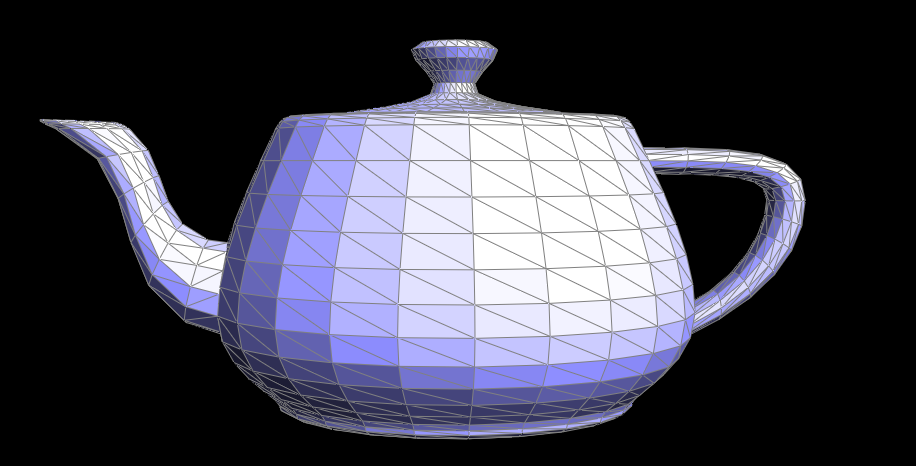
|
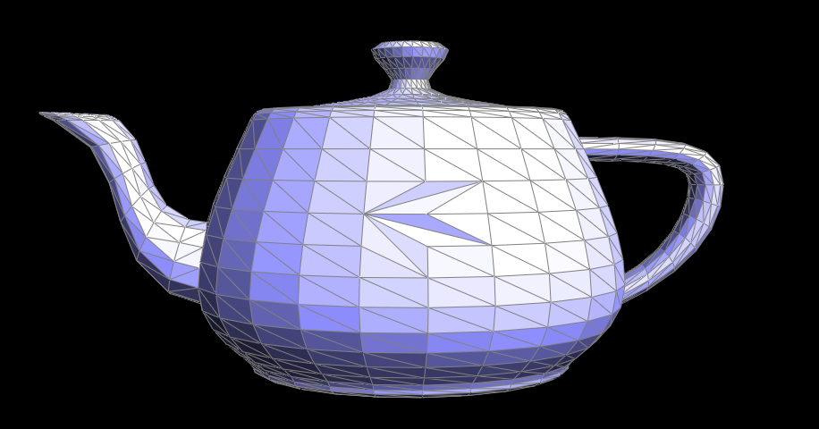
|
While implementing the code, we conceptualized this edge split operation using the diagram provided in the spec, taking the given edge, e0, as edge BC and reassigning it to be edge MC, while adding new edges MA, MB, and MD. Similarly, we took face ABC to be face AMC, face CBD to be face CMD, and made new faces AMB and BMD. Finally, we also made a new vertex for point M.
Building from the edge flip implementation, we use vertices B and C to compute the new midpoint M and set its halfedge to that of e0. We make new halfedge elements to assign to each new edge (a total of 6 new halfedges: 3 halfedges pairs each belonging to 3 new edges) and assign the halfedge pointers for each face using the ABCD vertex halfedges as well. Finally, we update each halfedge’s next, twin, vertex, edge, and face pointers to match their state after the edge split. Notably, we assign each new halfedge’s twin to their respective pair, and carefully assign the next halfedge as the counterclockwise halfedge, the vertex as the point the halfedge points away from, its associated edge, and the face that contains the halfedge.
Like in part 4 we didn't need to debug and got the code working on first try because we thorughly sketched out expected behavior.
|
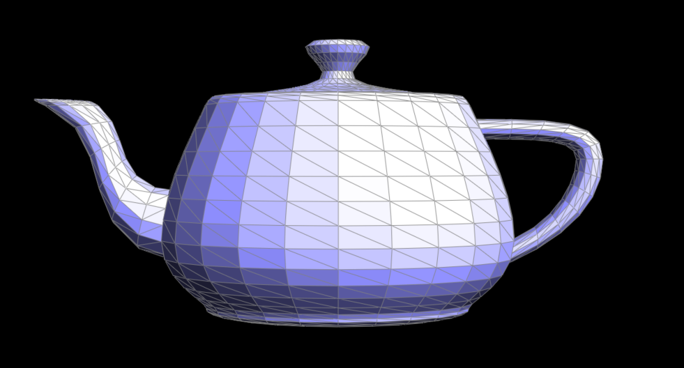
|
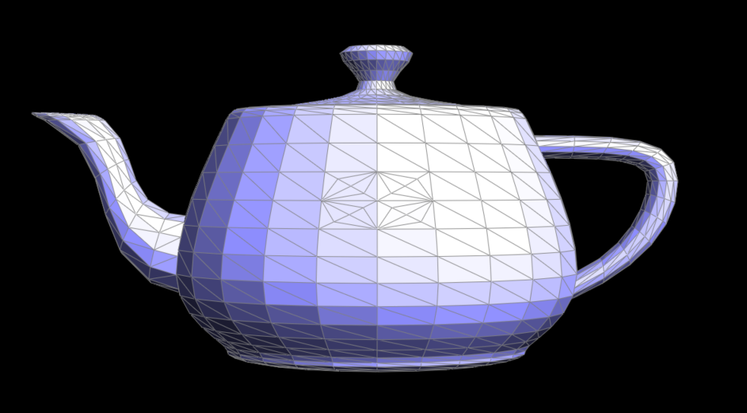
|
|
|
|
We computed the new vertex positions for new and old vertices, split every edge in the original mesh, flipped any new edge connecting an old and new vertex, then finally updated all the vertex positions. We stored the new vertex positions of old vertices in Vertex::newPosition and for new vertices in Edge::newPosition. While traversing through all the edges and vertices we used the isNew flags to mark them as old, then marked any new vertices and edges with isNew = true. One trick we had to use was after splitting every edge, we only marked every other edge as new to prevent the edges that lie along the original mesh from getting flipped too.
To debug, we added print statements and strategically commented out different steps of the program to isolate and identify faulty code.
| 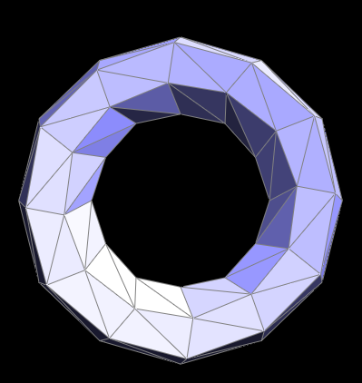 | 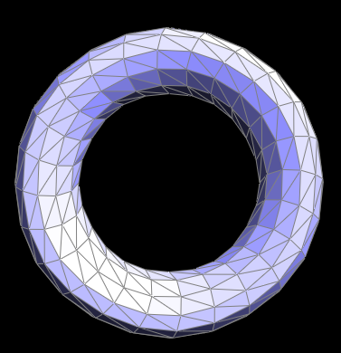 | 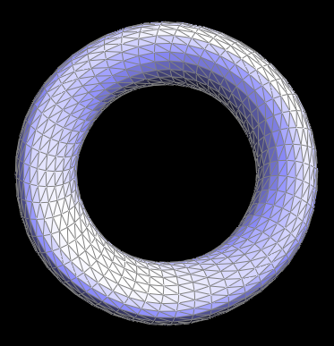 |
Sharp corners and edges become rounder and are softened after loop subdivision. Pre-splitting some edges adds extra faces and helps preserve the sharp features.
| 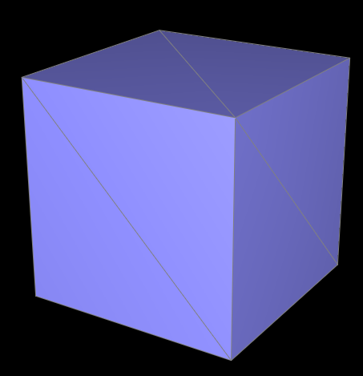 | 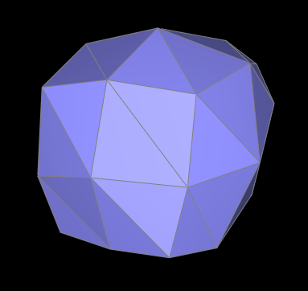 | 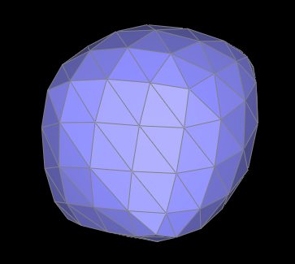 | 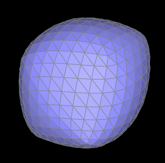 |
The asymmetry follows the shape of the isosceles triangles that are used to represent each face. Where after subdivision splits and flips edges, we still maintain the elongated nature of the triangle where 1 side is longer than the 2 other sides, resulting in an asymmetrical cube after subdivision.
| 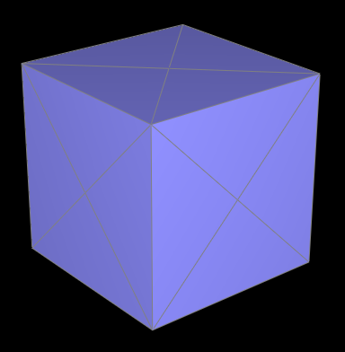 | 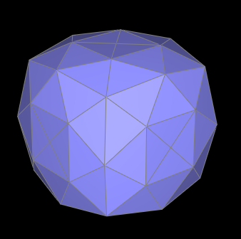 | 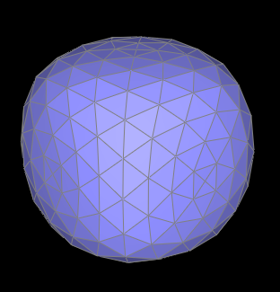 | 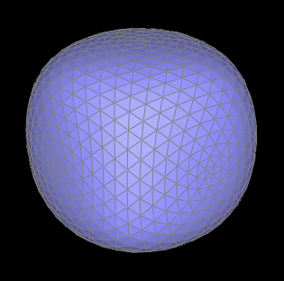 |
This preprocessing method subdivides the cube more symmetrically making 4 equal sized triangles that are rotationally symmetric and have more similar side lengths instead of the original 2 isosceles triangles that are only symmetric along 2 axes. By representing each face with equal sized and symmetric triangles, each subdivision step splits and flips the edges on each face in the same way, resulting in a more symmetric result.